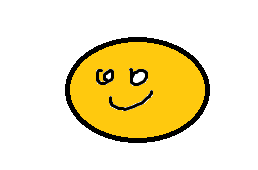
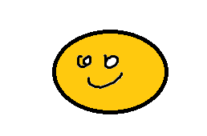

2022-06-01, M. Ryś
DVS Mesh, hypermesh 12, mesh, odsuniecie dvs, siatka, siatkowanie
Jest to program do usprawnienia siatkowania dla połączeń spawanych pod wymagania DVS. Siatka jest z odsunięciem.
Są dwa poziomy odsunięcia, można je ustawić w pliku konfiguracyjnym. Domyślnie jest to 7mm i 6mm.

Wybiera się ścieżkę nodów, a następnie kierunel wyciągnięcia. Można potem wybrać także drugi kierunek wyciągnięcia - jest to opcjonalne. Po uruchomieniu makra pojawią się komunikaty co zrobić.

Wybiera się ścieżkę nodów, a następnie kierunel wyciągnięcia. Można potem wybrać także drugi kierunek wyciągnięcia - jest to opcjonalne. Po uruchomieniu makra pojawią się komunikaty co zrobić.